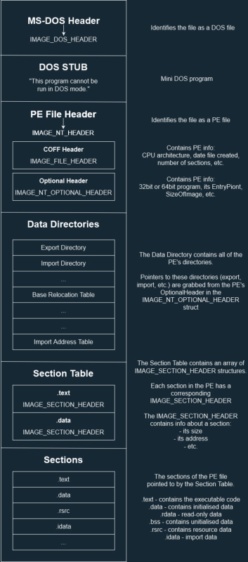

# The PE File Format
PE stands for
Portable Executable, and is the file format for executable files on Windows.
Resources•
http://www.skyfree.org/linux/references/coff.pdf - PE Specification - BEST PLACE TO LOOK
•
https://www.youtube.com/watch?v=l6GjU8fm8sM - MalwareAnalysisForHedgehogs
•
https://resources.infosecinstitute.com/2-malware-researchers-handbook-demystifying-pe-file/ - Basic
•
https://en.wikibooks.org/wiki/X86_Disassembly/Windows_Executable_Files#File_Format - Indepth but good
• Matt Pietrek - updated version of 1994 article
◇ Part 1 -
http://www.delphibasics.info/home/delphibasicsarticles/anin-depthlookintothewin32portableexecutablefileformat-part1 ◇ Part 2 -
http://www.delphibasics.info/home/delphibasicsarticles/anin-depthlookintothewin32portableexecutablefileformat-part2•
https://docs.microsoft.com/en-us/windows/win32/debug/pe-format - Microsoft Official
•
https://blog.kowalczyk.info/articles/pefileformat.html•
https://raw.githubusercontent.com/thecyberhex/books/master/Reverse%20Engineering%20for%20Beginners.pdf - Chatper 68 - Windows NT
## The PE File Format
PE stands for
Portable Executable/
The PE file format contains all the information Windows needs to load the executable into memory and execute it.
They're called Portable Executables because they were designed by Microsoft to run on all Windows flavours and support all CPUs.
A 32-bit PE is
PE32A 64-bit PE is
PE32+.exe and
.dll files both use the exact same PE format.
There are 6 main parts to the PE format:
•
DOS Header - identifies the file as a DOS file and points to the PE header
•
DOS Stub - a mini DOS program that prints "this program cannot be run in DOS mode"
•
PE Header - identifies the file as a PE file and points to more file information
◇
COFF Header - defines system architecture (x86 vs x64) and the number of sections
◇
Optional Header - contains info related to loading the PE - architecture, base address, entry point
•
Data Directories - contains info about exported functions, imported functions, relocations, etc.
•
Section Table - describes the sections of the PE and their size & address in the binary -
.text .data etc.
•
Sections - last are the PE's sections themselves -
.text .data etc.
Here's a small diagram:
